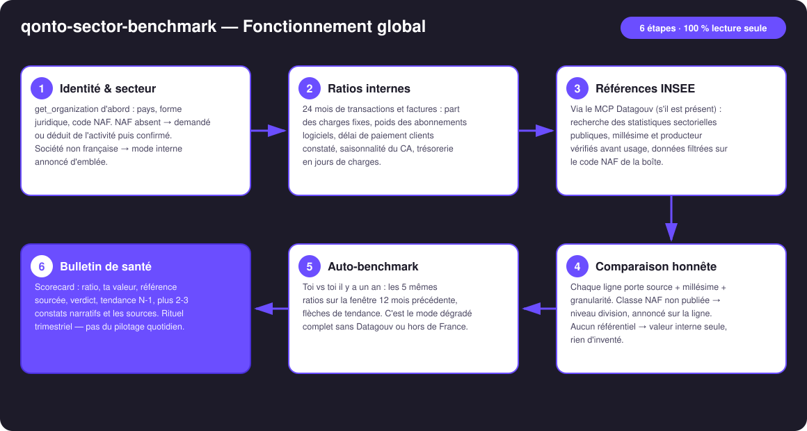
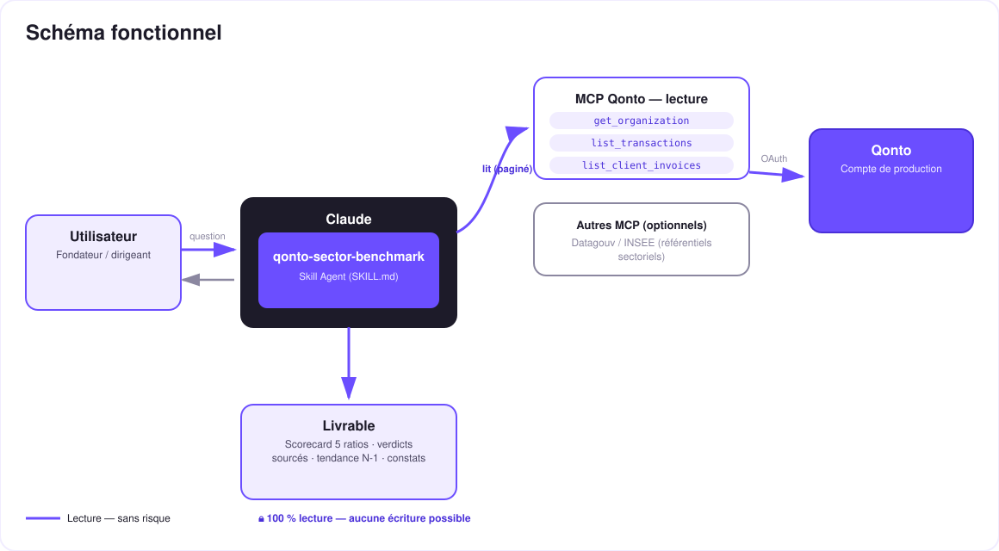

« Suis-je normal ? » — tes ratios réels face aux statistiques officielles de ton secteur.
« Suis-je normal ? » — la question que tout dirigeant se pose sans jamais avoir la réponse. Tu sens que tes charges sont lourdes ou que tes clients paient lentement, mais lourdes par rapport à quoi ? Le skill répond en un prompt :
Charges fixes, abonnements logiciels, délai de paiement clients constaté, saisonnalité du CA, trésorerie en jours de charges — calculés depuis le compte Qonto.
Statistiques publiques françaises (INSEE Ésane, délais de paiement) récupérées en direct via le MCP Datagouv, au niveau NAF le plus fin disponible.
Chaque comparaison porte source + millésime + granularité. Pas de dataset exact → niveau supérieur, annoncé. Jamais de chiffre inventé.
Auto-benchmark temporel systématique (« toi il y a un an ») — c'est aussi le mode dégradé complet sans Datagouv ou hors de France.
Résultat type : « tes clients te paient à 38 jours ; la médiane du secteur est 51 : tu encaisses plus vite que tes pairs » / « tes charges fixes pèsent 61 % vs ~45 % : voilà où creuser ».
| Prérequis | Détail | Obligatoire |
|---|---|---|
| Compte Qonto production | Le skill s'adapte à toute organisation — get_organization d'abord, zéro donnée en dur | ✅ |
| Pays | Comparaison sectorielle : France uniquement (INSEE). Autres pays Qonto (DE, ES, IT…) : ratios internes + auto-benchmark, jamais de mapping sur les données françaises | ℹ️ détecté |
| MCP Qonto connecté | Connecteur officiel (claude.ai / Claude Desktop), login OAuth | ✅ |
| MCP Datagouv | Détecté dynamiquement : présent → références sectorielles en direct ; absent → le skill le dit et bascule en auto-benchmark | ⭕ recommandé |
| Code NAF connu | Lu dans get_organization quand exposé ; sinon demandé (il est sur le KBIS) ou déduit de l'activité et confirmé | ⭕ |
| Historique ≥ 12 mois | Saisonnalité = 1 année pleine ; auto-benchmark ~24 mois. En dessous : calcule le calculable, taggue le reste indisponible | ⭕ |

list_cash_flow_categories → 403 sur le connecteur claude.ai — classement par détection de récurrences + labelsemitted_at vs settled_at) ; pagination ≤ 50 partout
Zéro écriture, par conception : le skill ne fait que lire — le compte Qonto d'un côté, l'open data public de l'autre. Rien à approuver, rien qui puisse bouger. Le seul « risque » est statistique, et il est traité par la règle d'or : source + millésime + granularité sur chaque chiffre, ou pas de chiffre.
| Ratio | Calcul (données Qonto) | Référence sectorielle |
|---|---|---|
| Part des charges fixes | Débits récurrents (tiers normalisé, montant stable ±10 %, ≥ 3 occurrences) ÷ total des débits, 12 mois | Structure des charges par NAF (INSEE Ésane) |
| Poids des abonnements logiciels | Récurrences dont le tiers matche des patterns SaaS ÷ total des débits — liste affichée, corrigeable | Ordre de grandeur par division NAF quand publié ; sinon valeur interne seule |
| Délai de paiement clients | Médiane émission de facture → paiement constaté (list_client_invoices + rapprochement transactions) | Délais de paiement moyens par secteur et taille, quand le dataset existe |
| Saisonnalité du CA | Coefficient de variation des encaissements mensuels sur 24 mois + mois pic/creux | Indices d'activité sectoriels quand disponibles ; sinon auto-benchmark |
| Trésorerie en jours de charges | Solde consolidé ÷ charge moyenne journalière (12 mois) | Surtout temporel (toi vs toi) — peu de référentiel public fiable, et le skill le dit |
| Référentiel | Ce qu'on y lit | Granularité | Piège connu |
|---|---|---|---|
| INSEE Ésane (statistiques structurelles d'entreprises) | Taux de marge, structure des charges, ratios sectoriels | Classe NAF (fine) ou division (repli annoncé) | Millésime en retard de 2-3 ans — toujours affiché |
| Datasets délais de paiement (data.gouv.fr) | Délais de paiement moyens/médians par secteur et taille | Variable selon le producteur — vérifiée via get_dataset_info | Privilégier les producteurs officiels sur les dépôts tiers |
| Chaîne d'accès MCP Datagouv | search_datasets → get_dataset_info → query_resource_data | Filtrage sur le code NAF de l'entreprise | Ressource non tabulaire/volumineuse → essayer une autre ressource, jamais un chiffre de mémoire |
| Sortie | Format | Quand |
|---|---|---|
| Réponse dans la conversation | Scorecard markdown : ratio · ta valeur · référence (source · millésime · granularité) · verdict · tendance N-1, + constats narratifs + sources | Toujours — c'est la base |
| Scorecard interactive | Fichier/artifact HTML : 5 jauges face aux fourchettes secteur, sources en notes de bas de page | Si l'hôte affiche les fichiers (artifacts claude.ai, Claude Desktop, Claude Code) ; repli automatique sur le markdown sinon |
La démo ≤ 3 min jointe à la PR suit le storyboard : la question « am I normal? » → ratios réels calculés → références INSEE sourcées → la révélation (« je pensais payer trop d'outils ; en fait je suis sous la médiane. Par contre mes clients me paient 13 jours plus lentement que la moyenne — LÀ est mon vrai problème ») → le bulletin final. Tournée en live sur un compte de production réel.
| Idée | Effort | Note |
|---|---|---|
| Référentiels par taille d'entreprise (NAF × tranche d'effectif/CA) | Moyen | Ésane publie certaines ventilations par taille — comparaison encore plus juste |
| Modules pays (Destatis DE, INE ES, ISTAT IT…) | Élevé | Même architecture, un connecteur open-data par pays |
| Historique des bulletins : trajectoire sur 4-8 trimestres | Faible | Réutilise l'auto-benchmark, simple mémoire des runs |
| Benchmark « panier de pairs » anonymisé | Élevé | Hors MCP actuel — piste produit Qonto plus que skill |
qonto-ceo-cockpit